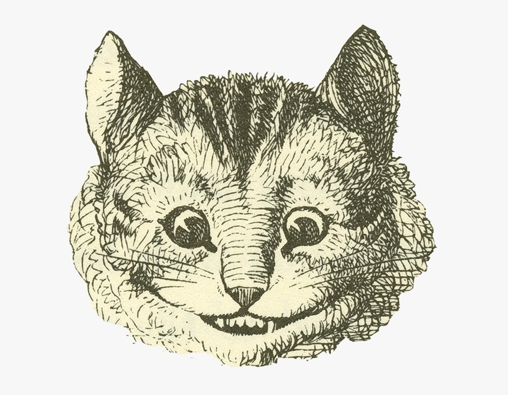

Projects
A collection of coursework and web development projects demonstrating my skills in HTML, CSS, JavaScript, problem solving, and technical design.

Positioning Project
A responsive website demonstrating CSS positioning techniques, page layout design, and modern styling practices. This project helped strengthen my understanding of floats, positioning, spacing, and responsive web design.
Style Season
A project focused on typography, color schemes, layout design, and responsive styling. It demonstrates how CSS can be used to create visually appealing and professional web pages.

Stylin' With CSS
A CSS-focused project demonstrating selectors, styling rules, layout techniques, and responsive design concepts. This project showcases the foundation of creating clean and effective web interfaces.
Throughout my coursework I have focused on building practical skills in web development, programming, electronics, and troubleshooting. Each project represents an opportunity to apply classroom concepts to real-world technical problems.
As I continue my education and prepare for a future in application development, I look forward to expanding this portfolio with additional projects that demonstrate both technical knowledge and problem-solving ability.